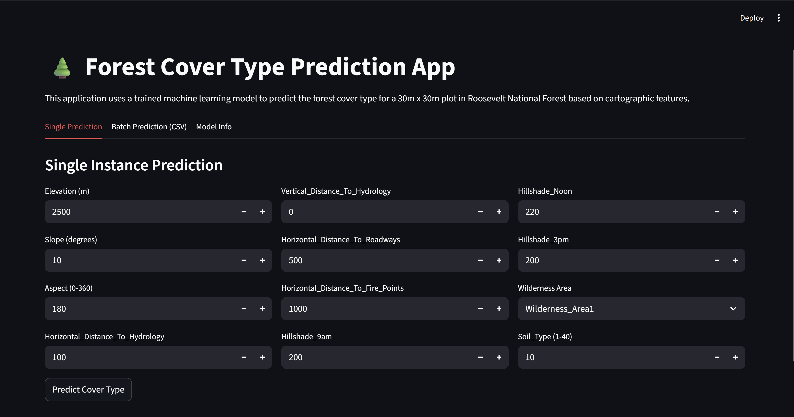
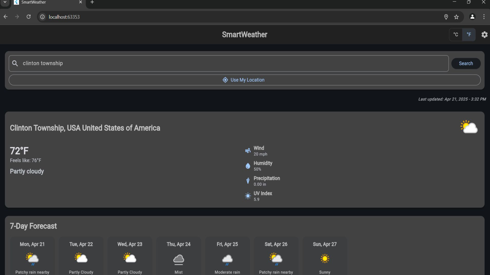
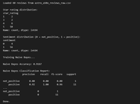

Course Projects:
Forest Cover Type Prediction (CSI 5810 - Information Retrieval & Knowledge Discovery)
- Analyzed a large scale environmental dataset using Python and scikit-learn.
-
Preprocessed terrain and soil features with scaling, PCA, and class-imbalance handling.
-
Implemented and compared k-NN, Logistic Regression, Naïve Bayes, and LDA.
-
Achieved ~78% accuracy with k-NN and identified key predictive features.
-
Built a Streamlit App supporting single-record and batch predictions.

Weather Application (CSI 3370 - Software Engineering & Practice)
Developed a cross-platform weather app using flutter.
Integrated WeatherAPI to provide detailed metrics.
Implemented user preferences such as dark mode, temperature unit toggling and other accessibility options.
Optimized performance and reliability.
Secured sensitive data using .env files.

Text Mining of Best Buy Reviews (CSI 5810 - Information Retrieval & Knowledge Discovery)
Scraped Logitech Astro A50X costumer reviews from BestBuy.com using Python, Requests, & BeautifulSoup.
Cleaned and prepared text data through normalization, noise removal, and sentiment labeling.
Converted review text into numerical features using TF-IDF vectorization.
Trained Naïve Bayes and Logistic Regression models for sentiment classification with high accuracy.
Addressed dynamic HTML structure and dataset imbalance during preprocessing and model evaluation
